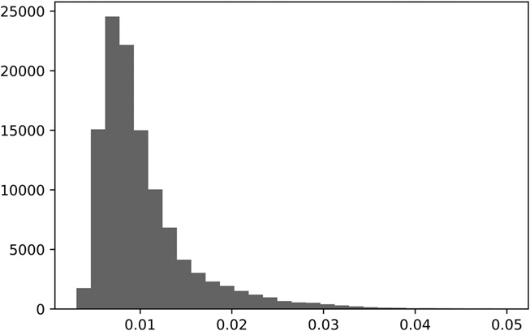
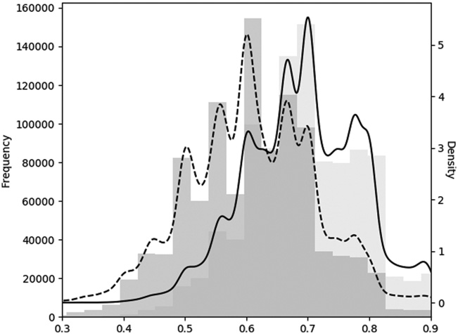
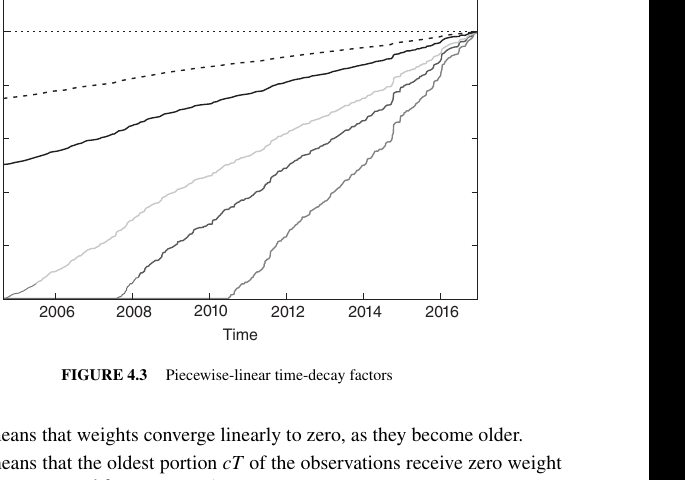

第一部分：数据分析
样本权重
4.1 动机
第 3 章介绍了几种对金融观测值进行标签化的新方法，引入了三重障碍法和元标签化（meta-labeling）两个新概念，并阐释了它们在金融应用中的价值，包括量化基本面投资策略。本章将介绍如何利用样本权重解决金融应用中另一个普遍存在的问题，即观测值并非由独立同分布（IID）过程生成。大多数 ML 文献均基于 IID 假设，而许多 ML 应用在金融领域失效的原因之一，正是该假设对于金融时间序列而言并不现实。
4.2 结果重叠
在第 3 章中，我们把标签 \(y_i\)赋给观测特征 \(X_i\)，其中 \(y_i\)由以下区间内出现的价格 bar 决定：\([t_{i,0},t_{i,1}]\)。当 \(t_{i,1}>t_{j,0}\)、\(i<j\)都满足时，\(y_i\)、\(y_j\)都会依赖同一段收益率 \(r_{t_{j,0},\min\{t_{i,1},t_{j,1}\}}\)，也就是以下区间的收益率：\([t_{j,0},\min\{t_{i,1},t_{j,1}\}]\)。这说明标签序列 \(\{y_i\}_{i=1,\ldots,I}\)只要相邻两项结果有重叠，就不满足 IID：\(\exists i\mid t_{i,1}>t_{i+1,0}\)。
一种规避办法是把下注的持有期限制为 \(t_{i,1}\le t_{i+1,0}\)。在这种情况下不存在重叠，因为每个特征的结果都在下一个观测特征开始之前或恰好在其开始时确定。这将导致粗粒度模型，其中特征的采样频率将受限于用于确定结果的时间跨度。一方面，若我们希望研究持续一个月的结果，特征的采样频率最多只能是月度。另一方面，若我们将采样频率提高至日频，则将被迫将结果的时间跨度缩短至一天。
如果采用三重障碍法等路径依赖的标签化技术，特征的采样频率还要受最先触及的障碍约束。无论如何，靠缩短结果的时间跨度来消除重叠都不是好办法。我们必须允许 \(t_{i,1}>t_{i+1,0}\)，这使我们回到了前面描述的结果重叠问题。
4.3 同期标签的数量
两个标签 \(y_i\)、\(y_j\)会在时刻 \(t\)同时有效，只要二者都取决于至少一段共同收益率：\(r_{t-1,t}=\frac{p_t}{p_{t-1}}-1\)。这里不要求完全重叠，也就是说，两个标签不必覆盖相同的时间区间。本节要计算的是：有多少个标签会用到给定收益率 \(r_{t-1,t}\)。
首先，对于每个时间点 \(t=1,\ldots,T\)，构造一个二值数组 \(\{1_{t,i}\}_{i=1,\ldots,I}\)，其中 \(1_{t,i}\in\{0,1\}\)。变量 \(1_{t,i}=1\)表示下面两个区间存在重叠：\([t_{i,0},t_{i,1}]\)与 \([t-1,t]\)、\(1_{t,i}=0\)表示不重叠。回顾一下，标签区间 \(\{[t_{i,0},t_{i,1}]\}_{i=1,\ldots,I}\)由第 3 章介绍的 t1对象给出。接着，时刻 \(t\)，\(c_t=\sum_{i=1}^{I}1_{t,i}\)就是同期标签数。代码清单 4.1 给出了这一逻辑的实现。
def mpNumCoEvents(closeIdx, t1, molecule):
'''
Compute the number of concurrent events per bar.
+molecule[0] is the date of the first event on which the weight will be computed
+molecule[-1] is the date of the last event on which the weight will be computed
Any event that starts before t1[molecule].max() impacts the count.
'''
# 1) find events that span the period [molecule[0], molecule[-1]]
t1 = t1.fillna(closeIdx[-1]) # unclosed events still must impact other weights
t1 = t1[t1 >= molecule[0]] # events that end at or after molecule[0]
t1 = t1.loc[:t1[molecule].max()] # events that start at or before t1[molecule].max()
# 2) count events spanning a bar
iloc = closeIdx.searchsorted(np.array([t1.index[0], t1.max()]))
count = pd.Series(0, index=closeIdx[iloc[0]:iloc[1] + 1])
for tIn, tOut in t1.iteritems():
count.loc[tIn:tOut] += 1.
return count.loc[molecule[0]:t1[molecule].max()]4.4 标签的平均唯一性
本节用标签在整个存续期内的平均唯一性，来衡量它与其他标签结果的非重叠程度。首先，标签 \(i\)在时刻 \(t\)的唯一性为 \(u_{t,i}=1_{t,i}c_t^{-1}\)。然后，标签 \(i\)的平均唯一性，就是 \(u_{t,i}\)在该标签整个存续期内的平均值：
这一平均唯一性也可以理解为事件存续期内 \(c_t\)的调和平均数的倒数。图 4.1 展示了根据对象 t1计算出的唯一性直方图。代码清单 4.2 实现了这一计算。

def mpSampleTW(t1,numCoEvents,molecule):
# Derive average uniqueness over the event's lifespan
wght=pd.Series(index=molecule)
for tIn,tOut in t1.loc[wght.index].iteritems():
wght.loc[tIn]=(1./numCoEvents.loc[tIn:tOut]).mean()
return wght
#---------------------------------------
numCoEvents=mpPandasObj(mpNumCoEvents,('molecule',events.index),numThreads, \
closeIdx=close.index,t1=events['t1'])
numCoEvents=numCoEvents.loc[~numCoEvents.index.duplicated(keep='last')]
numCoEvents=numCoEvents.reindex(close.index).fillna(0)
out['tW']=mpPandasObj(mpSampleTW,('molecule',events.index),numThreads, \
t1=events['t1'],numCoEvents=numCoEvents)请注意，这里再次用到函数 mpPandasObj，它通过 multiprocessing（多进程）加快计算（见第 20 章）。对于标签 \(i\)，\(\bar u_i\)表示该标签的平均唯一性；计算这个值时，需要用到未来才能确定的信息 events['t1']。这没有问题，因为 \(\{\bar u_i\}_{i=1,\ldots,I}\)只会和标签信息一起用于训练集，不会用于测试集。这些 \(\{\bar u_i\}_{i=1,\ldots,I}\)也不参与标签预测，所以不会造成信息泄漏。借助这套做法，可以根据结果的非重叠程度，为每个观测特征给出 0 到 1 之间的唯一性得分。
4.5 Bagging 分类器与唯一性
某个特定项目 \(i\)在进行 \(I\)次有放回抽样时，如果集合中共有 \(I\)个项目，那么它一次也没被抽中的概率为 \((1-I^{-1})^I\)。随着样本量增大，该概率收敛于渐近值 \(\lim_{I\to\infty}(1-I^{-1})^I=e^{-1}\)。也就是说，抽样结果中不重复观测所占的期望比例为 \((1-e^{-1})\approx 2/3\)。
假设不重叠结果的最大数量为 \(K\le I\)。同理，某个特定项目 \(i\)在进行 \(I\)次有放回抽样时，如果集合中共有 \(I\)个项目，那么它一次也没被抽中的概率为 \((1-K^{-1})^I\)。随着样本量增大，该概率可近似为 \((1-I^{-1})^{IK/I}\approx e^{-K/I}\)。也就是说，抽样结果中不重复观测所占的期望比例为 \(1-e^{-K/I}\le 1-e^{-1}\)。这说明，错误地把抽样当作 IID 会造成过度抽样。
对平均唯一性满足 \(I^{-1}\sum_{i=1}^{I}\bar u_i\ll 1\)的观测做有放回抽样（自助抽样）时，袋内观测越来越可能出现以下情况：（1）彼此冗余；（2）与袋外观测十分相似。
重复抽到相同信息，会降低自助抽样的效率（见第 6 章）。以随机森林为例，森林里的各棵树最终可能都只是同一棵过拟合决策树的近似副本。随机抽样还会使袋外样本和袋内样本十分相似，进而严重高估袋外准确率。第 7 章讨论非 IID 观测的交叉验证时，会处理第二个问题。这里先讨论这类观测的 bagging 问题：它们的平均唯一性满足 \(I^{-1}\sum_{i=1}^{I}\bar u_i\ll 1\)。
第一种办法，是在自助抽样前删除结果重叠的观测。但这些结果往往只重叠一部分；仅仅因此就删掉整个观测，会损失大量信息。因此，我不建议这样做。
更好的第二种办法，是利用平均唯一性 \(I^{-1}\sum_{i=1}^{I}\bar u_i\)来减弱冗余结果的过度影响。具体来说，可以只抽取 out['tW'].mean()这一比例的观测，或取它的一个较小倍数。在 sklearn 中，sklearn.ensemble.BaggingClassifier类提供参数 max_samples，可设为 max_samples=out['tW'].mean()。这样可确保袋内观测的抽样频率不会远高于其唯一性。随机森林没有 max_samples这一功能；但可以改为对大量决策树做 bagging。第 6 章会进一步讨论这种办法。
4.5.1 序贯自助法（sequential bootstrap）
第三种、也是更好的办法，是采用序贯自助法（sequential bootstrap）：每次抽样的概率都会动态变化，以控制冗余程度。Rao 等人 [1997]提出不断进行有放回的序贯重采样，直到出现 \(K\)个不同的原始观测。这个思路很有意思，但并不完全适合这里的金融问题。下面介绍另一种直接处理结果重叠的方法。
首先，从均匀分布中抽取一个观测 \(X_i\)，即 \(i\sim U[1,I]\)。换句话说，任意特定取值 \(i\)被抽中的初始概率为 \(\delta_i^{(1)}=I^{-1}\)。第二次抽样时，我们希望降低抽中结果高度重叠的观测 \(X_j\)的概率。要知道，自助法允许重复抽样，因此仍有可能再次抽中 \(X_i\)，但我们希望降低这种可能性，因为 \(X_i\)与自身完全重叠。用 \(\varphi\)表示截至目前的抽样序列，其中可以有重复。此时有 \(\varphi^{(1)}=\{i\}\)。
观测 \(j\)在时刻 \(t\)的唯一性为
这个值来自把备选观测 \(j\)加入现有抽样序列 \(\varphi^{(1)}\)后得到的唯一性。观测 \(j\)的平均唯一性，就是 \(u_{t,j}^{(2)}\)在观测 \(j\)存续期内的平均值，\(\bar u_j^{(2)}=\left(\sum_{t=1}^{T}u_{t,j}^{(2)}\right)\left(\sum_{t=1}^{T}1_{t,j}\right)^{-1}\)。现在可以按照更新后的概率 \(\{\delta_j^{(2)}\}_{j=1,\ldots,I}\)：
其中 \(\{\delta_j^{(2)}\}_{j=1,\ldots,I}\)都经过缩放，使总和等于 1，即 \(\sum_{j=1}^{I}\delta_j^{(2)}=1\)。接下来进行第二次抽样，更新 \(\varphi^{(2)}\)，再重新计算 \(\{\delta_j^{(3)}\}_{j=1,\ldots,I}\)。不断重复这一过程，直到 \(I\)次抽样全部完成。这套序贯自助法仍允许重叠，甚至允许重复，只是重叠程度越高，被抽中的概率就越低。与标准自助法相比，序贯自助法抽出的样本会更接近 IID。只要比较两种方法下的 \(I^{-1}\sum_{i=1}^{I}\bar u_i\)，并确认序贯自助法的数值更高，就能验证这一点。
4.5.2 序贯自助法的实现
代码清单 4.3 根据两个参数构造指示矩阵：bar 的索引（barIx）以及 pandas 序列（ t1）。第 3 章已经多次用到它。回顾一下，t1的索引记录特征的观测时刻，值数组记录标签的确定时刻。函数返回一个二值矩阵，说明每个观测的标签受哪些价格 bar 影响。
import pandas as pd,numpy as np
#---------------------------------------
def getIndMatrix(barIx,t1):
# Get indicator matrix
indM=pd.DataFrame(0,index=barIx,columns=range(t1.shape[0]))
for i,(t0,t1) in enumerate(t1.iteritems()):
indM.loc[t0:t1,i]=1.
return indM代码清单 4.4 返回每个观测特征的平均唯一性，输入是 getIndMatrix 构造的指示矩阵。
def getAvgUniqueness(indM):
# Average uniqueness from indicator matrix
c=indM.sum(axis=1) # concurrency
u=indM.div(c,axis=0) # uniqueness
avgU=u[u>0].mean() # average uniqueness
return avgU代码清单 4.5 返回序贯自助法抽到的特征索引。输入包括指示矩阵（indM）和可选的样本长度（sLength），默认抽样次数等于指示矩阵的列数。该矩阵在代码中记为 indM。
def seqBootstrap(indM,sLength=None):
# Generate a sample via sequential bootstrap
if sLength is None:
sLength=indM.shape[1]
phi=[]
while len(phi)<sLength:
avgU=pd.Series()
for i in indM:
indM_=indM[phi+[i]] # reduce indM
avgU.loc[i]=getAvgUniqueness(indM_).iloc[-1]
prob=avgU/avgU.sum() # draw prob
phi+=[np.random.choice(indM.columns,p=prob)]
return phi4.5.3 数值示例
考虑一组标签 \(\{y_i\}_{i=1,2,3}\)，其中标签 \(y_1\)取决于收益率 \(r_{0,3}\)，标签 \(y_2\)取决于收益率 \(r_{2,4}\)，以及标签 \(y_3\)取决于收益率 \(r_{4,6}\)。各项结果的重叠关系可用下面的指示矩阵表示：\(\{1_{t,i}\}\)：
这一过程先从 \(\varphi^{(0)}=\emptyset\)开始，并使用均匀概率分布 \(\delta_i=1/3,\ \forall i=1,2,3\)。假设从 \(\{1,2,3\}\)中随机抽数，结果为 2。再次从 \(\{1,2,3\}\)抽取之前（别忘了，自助法允许重复抽样），需要先调整概率。目前已经抽到的观测集合为 \(\varphi^{(1)}=\{2\}\)。
第一个特征的平均唯一性为 \(\bar u_1^{(2)}=(1+1+\tfrac{1}{2})/3=5/6<1\)，第二个特征的平均唯一性为 \(\bar u_2^{(2)}=(\tfrac{1}{2}+\tfrac{1}{2})/2=1/2<1\)。第二次抽取的概率为 \(\delta^{(2)}=\{5/14,3/14,6/14\}\)。
有两点值得注意：（1）第一次抽中的特征重叠度最高，因此下一次抽中它的概率最低；（2）在 \(\varphi^{(1)}\)之外的两个候选项中，概率更高的是 \(\delta_3^{(2)}\)，因为这个标签与 \(\varphi^{(1)}\)没有重叠。假设第二次抽到数字 3。第三次也是最后一次抽样所用概率 \(\{\delta^{(3)}\}\)如何更新，留作练习。代码清单 4.6 在本例的 \(\{1_{t,i}\}\)指示矩阵上运行序贯自助法。
def main():
t1=pd.Series([2,3,5],index=[0,2,4]) # t0,t1 for each feature obs
barIx=range(t1.max()+1) # index of bars
indM=getIndMatrix(barIx,t1)
phi=np.random.choice(indM.columns,size=indM.shape[1])
print phi
print 'Standard uniqueness:',getAvgUniqueness(indM[phi]).mean()
phi=seqBootstrap(indM)
print phi
print 'Sequential uniqueness:',getAvgUniqueness(indM[phi]).mean()
return4.5.4 蒙特卡洛实验
可以用实验来评估序贯自助法的效率。代码清单 4.7 给出了一个函数，用来生成含 numObs（I）个观测的随机 t1 序列。每个观测的起点从边界为 0 和 numBars 的均匀分布中抽取，其中 numBars 是 bar 总数（T）。观测跨越的 bar 数则从边界为 0 和 maxH 的均匀分布中抽取。
def getRndT1(numObs,numBars,maxH):
# random t1 Series
t1=pd.Series()
for i in xrange(numObs):
ix=np.random.randint(0,numBars)
val=ix+np.random.randint(1,maxH)
t1.loc[ix]=val
return t1.sort_index()代码清单 4.8 读取这个随机 t1 序列，得到相应的指示矩阵 indM，然后按两种方法处理该矩阵。第一种方法用标准自助法（有放回随机抽样）计算平均唯一性；第二种方法用序贯自助法计算。结果以字典返回。
def auxMC(numObs,numBars,maxH):
# Parallelized auxiliary function
t1=getRndT1(numObs,numBars,maxH)
barIx=range(t1.max()+1)
indM=getIndMatrix(barIx,t1)
phi=np.random.choice(indM.columns,size=indM.shape[1])
stdU=getAvgUniqueness(indM[phi]).mean()
phi=seqBootstrap(indM)
seqU=getAvgUniqueness(indM[phi]).mean()
return {'stdU':stdU,'seqU':seqU}这些操作要重复很多轮。代码清单 4.9 使用第 20 章介绍的 multiprocessing（多进程）技术来运行蒙特卡洛模拟。例如，在 numObs=10、numBars=100、maxH=5 时，一台 24 核服务器完成 1E6 轮模拟大约需要 6 小时；如果不并行，大约要 6 天。
import pandas as pd, numpy as np
from mpEngine import processJobs, processJobs_
def mainMC(numObs=10, numBars=100, maxH=5, numIters=1E6, numThreads=24):
# Monte Carlo experiments
jobs = []
for i in xrange(int(numIters)):
job = {'func': auxMC, 'numObs': numObs, 'numBars': numBars, 'maxH': maxH}
jobs.append(job)
if numThreads == 1:
out = processJobs_(jobs)
else:
out = processJobs(jobs, numThreads=numThreads)
print pd.DataFrame(out).describe()
return
图 4.2 分别画出了标准自助样本（左）和序贯自助样本（右）的唯一性直方图。标准方法的平均唯一性中位数是 0.6，序贯方法则是 0.7。对均值差做 ANOVA 检验，得到的 p 值几乎为零。换句话说，在任何合理的置信水平下，序贯自助样本的期望唯一性都高于标准自助样本。
4.6 收益归因
上一节介绍了怎样用自助法抽出更接近 IID 的样本。本节进一步说明怎样给这些样本加权，以训练 ML 算法。如果把高度重叠的结果和不重叠的结果一视同仁，前者就会获得过大的整体影响。同时，绝对收益率很大的标签也应当比收益率近乎为零的标签更重要。简言之，观测权重需要同时考虑唯一性和绝对收益率。
当标签由收益率的正负决定时（\(\{-1,1\}\)用于普通标签化，\(\{0,1\}\)用于元标签化），样本权重可以用事件存续期内分摊收益率的总和来定义，事件区间为 \([t_{i,0},t_{i,1}]\)：
因此有 \(\sum_{i=1}^{I}w_i=I\)。这里把权重缩放到总和为 \(I\)，因为包括 sklearn 在内的程序库，通常都按默认权重为 1 来定义算法参数。这样加权的理由是：一个观测独自贡献的绝对对数收益率越大，它的权重就应越高。但如果存在“中性”类别（收益率低于阈值），这种方法就不适用，因为中性样本的收益率越低，权重反而应该越高。实际上不必单列“中性”类别：置信度很低的“-1”或“1”预测已经能够表达中性状态。这也是我通常建议去掉中性类别的原因之一。代码清单 4.10 实现了这一方法。
def mpSampleW(t1,numCoEvents,close,molecule):
# Derive sample weight by return attribution
ret=np.log(close).diff() # log-returns, so that they are additive
wght=pd.Series(index=molecule)
for tIn,tOut in t1.loc[wght.index].iteritems():
wght.loc[tIn]=(ret.loc[tIn:tOut]/numCoEvents.loc[tIn:tOut]).sum()
return wght.abs()
#---------------------------------------
out['w']=mpPandasObj(mpSampleW,('molecule',events.index),numThreads, \
t1=events['t1'],numCoEvents=numCoEvents,close=close)
out['w']*=out.shape[0]/out['w'].sum()4.7 时间衰减
市场是自适应系统（Lo [2017]）。市场不断演化，旧样本对当前市场的参考价值通常不如新样本。因此，随着新观测到来，我们往往希望让旧样本的权重逐渐衰减。设 \(d[x]\ge0,\ \forall x\in\left[0,\sum_{i=1}^{I}\bar u_i\right]\)为时间衰减因子，用它乘以前一节得到的样本权重。最新一项权重不衰减，即 \(d\left[\sum_{i=1}^{I}\bar u_i\right]=1\)；其他权重都以它为基准进行调整。
令 \(c\in(-1,1]\)为用户设定的参数，衰减函数按以下规则确定：若 \(c\in[0,1]\)，\(d[1]=c\)，权重按线性函数衰减；若 \(c\in(-1,0)\)，\(d\left[-c\sum_{i=1}^{I}\bar u_i\right]=0\)，衰减函数在 \(-c\sum_{i=1}^{I}\bar u_i\)、\(\sum_{i=1}^{I}\bar u_i\)这两个边界之间线性变化；同时，\(d[x]=0\ \forall x\le -c\sum_{i=1}^{I}\bar u_i\)。对于分段线性函数 \(d=\max\{0,a+bx\}\)，可以用下面的边界条件满足这些要求：
- \(d=a+b\sum_{i=1}^{I}\bar u_i=1\Rightarrow a=1-b\sum_{i=1}^{I}\bar u_i\)。
- 另一个边界条件取决于参数 \(c\)：
- \(d=a+b0=c\Rightarrow b=(1-c)\left(\sum_{i=1}^{I}\bar u_i\right)^{-1},\ \forall c\in[0,1]\)。
- \(d=a-bc\sum_{i=1}^{I}\bar u_i=0\Rightarrow b=(c+1)\left(\sum_{i=1}^{I}\bar u_i\right)^{-1},\ \forall c\in(-1,0)\)。
def getTimeDecay(tW,clfLastW=1.):
# apply piecewise-linear decay to observed uniqueness (tW)
# newest observation gets weight=1, oldest observation gets weight=clfLastW
clfW=tW.sort_index().cumsum()
if clfLastW>=0:
slope=(1.-clfLastW)/clfW.iloc[-1]
else:
slope=1./((clfLastW+1)*clfW.iloc[-1])
const=1.-slope*clfW.iloc[-1]
clfW=const+slope*clfW
clfW[clfW<0]=0
print const,slope
return clfW下面几种情况值得单独说明：
- \(c=1\)表示不做时间衰减。
- \(0<c<1\)表示权重随时间线性衰减，但再旧的观测也仍有大于 0 的权重。

- \(c=0\)表示观测越旧，权重越小，并线性降到 0。
- \(c<0\)表示最旧的那部分 \(cT\)观测的权重为 0（也就是从记忆中删除）。
图 4.3 展示了衰减后的权重 out['w']*df；这里采用的衰减参数为 \(c\in\{1,.75,.5,0,-.25,-.5\}\)。虽然未必实用，但要让权重随样本变旧而增大，也可以把参数设为 \(c>1\)。
4.8 类别权重
除了样本权重，类别权重也常常很有用。类别权重用来补偿样本数不足的标签。当分类问题中最重要的类别恰好很少出现时，这一点尤其关键（King 和 Zeng [2001]）。例如，假设要预测流动性危机，如 2010 年 5 月 6 日的闪崩。这类事件之间可能隔着数百万个普通观测，因此极其少见。如果不给这些稀有标签对应的样本更高权重，ML 算法就会一味提高常见标签的准确率，把闪崩当成离群点，而不是虽少见但真实存在的事件。ML 程序库通常都支持类别权重。例如，对类别 class[j]（j=1,…,J）的样本出错时，sklearn 使用 class_weight[j] 而不是 1 作为惩罚权重。因此，提高标签 j 的类别权重，会迫使算法提高该标签的准确率。如果各类别权重之和不等于 J，效果就相当于改变分类器的正则化参数。
在金融应用中，分类算法通常使用的标签是 \(\{-1,1\}\)。预测概率如果只略高于 0.5、但又低于某个中性阈值，就可以表示 0（中性）状态。没有理由偏重任一类别的准确率，因此一个稳妥的默认设置是 class_weight='balanced'。这样重新加权后，相当于让所有类别以相同频率出现。对 bagging 分类器，还可以考虑参数 class_weight='balanced_subsample'；这表示会对袋内自助抽样样本应用 class_weight='balanced'，而不是对整个数据集应用。若想了解完整细节，可阅读 class_weight在 sklearn 中的实现源码。另请留意这个已报告的问题：https://github.com/scikit-learn/scikit-learn/issues/4324.
参考文献
- Rao, C., P. Pathak and V. Koltchinskii (1997): “Bootstrap by sequential resampling.” Journal of Statistical Planning and Inference, Vol. 64, No. 2, pp. 257–281.
- King, G. and L. Zeng (2001): “Logistic Regression in Rare Events Data.” Working paper, Harvard University. Available at https://gking.harvard.edu/files/0s.pdf.
- Lo, A. (2017): Adaptive Markets, 1st ed. Princeton University Press.
参考书目
样本加权在 ML 文献中很常见。不过，本章讨论的实际问题主要出现在投资应用中，相关学术研究十分有限。下面列出了一些与本章问题略有交集的文献。
- Efron, B. (1979): “Bootstrap methods: Another look at the jackknife.” Annals of Statistics, Vol. 7, pp. 1–26.
- Efron, B. (1983): “Estimating the error rote of a prediction rule: Improvement on cross-validation.” Journal of the American Statistical Association, Vol. 78, pp. 316–331.
- Bickel, P. and D. Freedman (1981): “Some asymptotic theory for the bootstrap.” Annals of Statistics, Vol. 9, pp. 1196–1217.
- Gine, E. and J. Zinn (1990): “Bootstrapping general empirical measures.” Annals of Probability, Vol. 18, pp. 851–869.
- Hall, P. and E. Mammen (1994): “On general resampling algorithms and their performance in distribution estimation.” Annals of Statistics, Vol. 24, pp. 2011–2030.
- Mitra, S. and P. Pathak (1984): “The nature of simple random sampling.” Annals of Statistics, Vol. 12, pp. 1536–1542.
- Pathak, P. (1964): “Sufficiency in sampling theory.” Annals of Mathematical Statistics, Vol. 35, pp. 795–808.
- Pathak, P. (1964): “On inverse sampling with unequal probabilities.” Biometrika, Vol. 51, pp. 185– 193.
- Praestgaard, J. and J. Wellner (1993): “Exchangeably weighted bootstraps of the general empirical process.” Annals of Probability, Vol. 21, pp. 2053–2086.
- Rao, C., P. Pathak and V. Koltchinskii (1997): “Bootstrap by sequential resampling.” Journal of Statistical Planning and Inference, Vol. 64, No. 2, pp. 257–281.